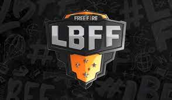

A Liga Brasileira de Free Fire (LBFF) chega à oitava edição. A partir de 6 de agosto, 18 times entram na disputa semanal pelo título brasileiro na modalidade e por uma parte da premiação total de R$ 745 mil. Todos os jogos acontecem presencialmente, no estúdio da Garena em São Paulo. A final está marcada para 15 de outubro, com os 12 melhores colocados na tabela da fase classificatória, disputada em 27 rodadas, ao longo de nove semanas
Benefícios
- TSM FTX,LOUD,GOD UNIDAS,B4 E-SPORTS,CORINTHIANS FF,TROPICAOS.
- FLUXO,STARS HORIZON,META GAMING,TEAM LIQUID,NETSHOES MINERS,MAGIC SQUAD.
- VIVO KEYD,LOS GRANDES,ANGELS,HUMMER,BD VASCO,PAIN GAMING.